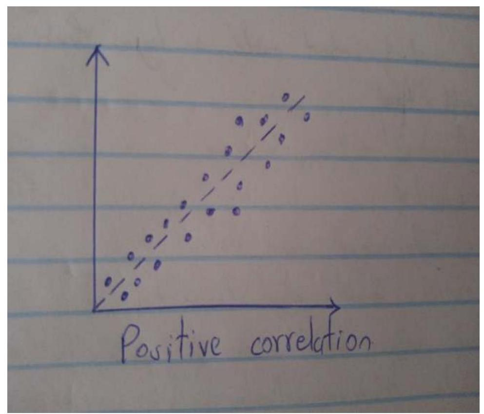
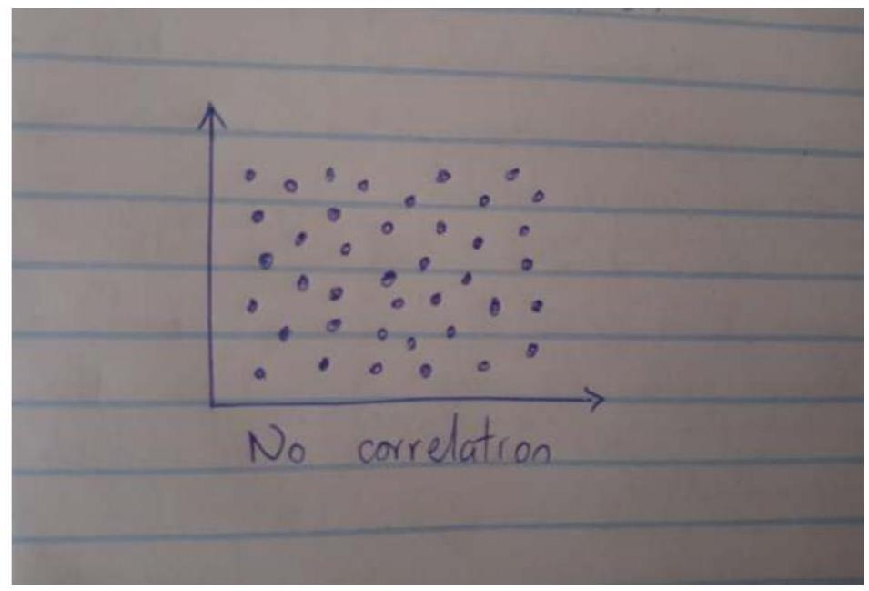

Biostatistics Part 3: Sampling, Data Representation, Correlation
Sampling and sample size.
Sampling refers to researcher's process of selecting the sample for a population in order to obtain information.
Sample is a fraction or a part of a whole.
Factors to consider when choosing a sample.
- Variance or heterogeneity of the population.
- Degree of acceptable error.
Generally one needs to make a judgment on all facts.
Fischer's etal formula
It's appropriate for population size $\geq 10,000$.
$n=$ desired sample.
$\mathrm{z}=$ standard normal deviate(1.96)
$\mathrm{p}=$ portion of the population estimated to have a certain characteristic.(if there is no reasonable estimate, use $50 \%$ which is 0.5 ).
$\mathrm{q}=$ portion of population with no desired characteristic.
$\mathrm{D}=$ degree of accuracy, usually 0.05 .
For a sample size $\leq 10,000$
$nf=$ desired sample size
$\mathrm{N}=$ estimated population $<10,000$
$\mathrm{n}=$ estimated sample when N is greater or equal to 10,000 .
For population size of upto 30, use the able population.
Calculation of demographic rates.
a) Incidence rate.
The incidence rate of a disease is ad follows;
b) Prevalence rate.
The prevalence rate of a disease at a time is;
c) Mortality rate.
It's the;
d) Morbidity rate.
Number of deaths in a given time $*$ the percentage $(100,1000,10000)$
Total population
DATA REPRESENTATION
Graphical presentation
A graph enables the researcher to see the trend in the distribution easily than looking at numbers in a frequency distribution.
A graph has two axes, the horizontal axis and the vertical axis. Its customary to present frequency along the vertical axis and scores along the horizontal axis.
Avoid too steep or too flat graphs.
The width of the graph should be $1 / 3$ to $2 / 3$ its height.
A graph should be well labeled on both axes, should have a title.
The three types of graphs include;
(a) Histogram.
Comprises of a series of vertical bars. The y axis represent number of subjects obtaining a particular score.
Exact limits are used to construct a histogram and therefore its used with continuous data.

(b) Bar chart.
Preferred with discrete or categorical data or when the scale is nominal; has no order.
Spaces are left between the bars to signify the lack of continuity between the categories.

(c) Frequency polygon.
A polygon is a many sided figure.

One must establish midpoint of class interval when plotting a frequency polygon.
It's a closed figure and the end meets the x axis.
Frequency distribution table.
It shows the distribution of scores in a sample for a specific variable. It gives a record of the number of times a score or response occurs.
Ungrouped data
| Score | Frequency |
|---|---|
| 40 | 2 |
| 50 | 10 |
| 60 | 5 |
| 70 | 3 |
| Total | 20 |
Grouped data
| Score | Frequency |
|---|---|
| 31-40 | 2 |
| 41-50 | 10 |
| 51-60 | 5 |
| 61-70 | 3 |
| Total | 20 |
Percentage frequency
Its the portion of a subgroup to the total group or sample and it ranges from 0 to 100 .
It's important especially when there is need to compare groups that differ in size.
Correlation coefficients
A correlation used to analyze the degree of relationship between two variables.
A correlation coefficient is a number that expresses the magnitude and direction of the association between two variables.
In order to demonstrate that 2 variables are related, the researcher has to obtain values or measurements on both variables for the same event.
Example; A researcher obtains weight and intake of calories by diabetic patients over a period of time then compares the relationship.
Types of correlation coefficients.
- Phi $\boldsymbol{\Phi}$ - Its when variables are measured in a nominal scale
- Spearman's rank/ Rho $\mathbf{P}$ - is when both variables are measured in ordinal scale.
- Pearson's correlation coefficients $\mathbf{r}$ - when both variables are measured in on an interval or ratio scale.
To obtain a visual representation of the relationship between two variables, the researcher plots values on a scattergram.
Scattergram is a graphic representation of the paired score for each subject on the two variables.
Pairs of dots are plotted on the graph, placing them to indicate where x and y intersect.
If the pattern of dots extend from lower left corner to upper right corner, positive correlation is indicated.
If the dots are distributed from upper left corner to lower right corner, a negative correlation exists.
When dots are scattered all over, no relation exists between the two variables.
NB - A positive correlation means that two variables tend to increase and decrease together.
- A negative correlation denotes inverse relations, when one increases, the other decreases.
Values in a correlation coefficient range from +1 to -1 , where +1 implies a perfect positive correlation, 0 implies no correlation and -1 implies a perfect negative correlation.
Positive correlation

Negative correlation
No correlation
Contingency table/ cross tabulation table.
Displays the relationship between sets of nominal data.
Example; A researcher wants to determine whether or not there is a relationship between gender and smoking.
| Gender | Smoke | Don't smoke | Total |
|---|---|---|---|
| Male | 30 | 20 | 50 |
| Female | 25 | 25 | 50 |
| Total | 55 | 45 | 100 |